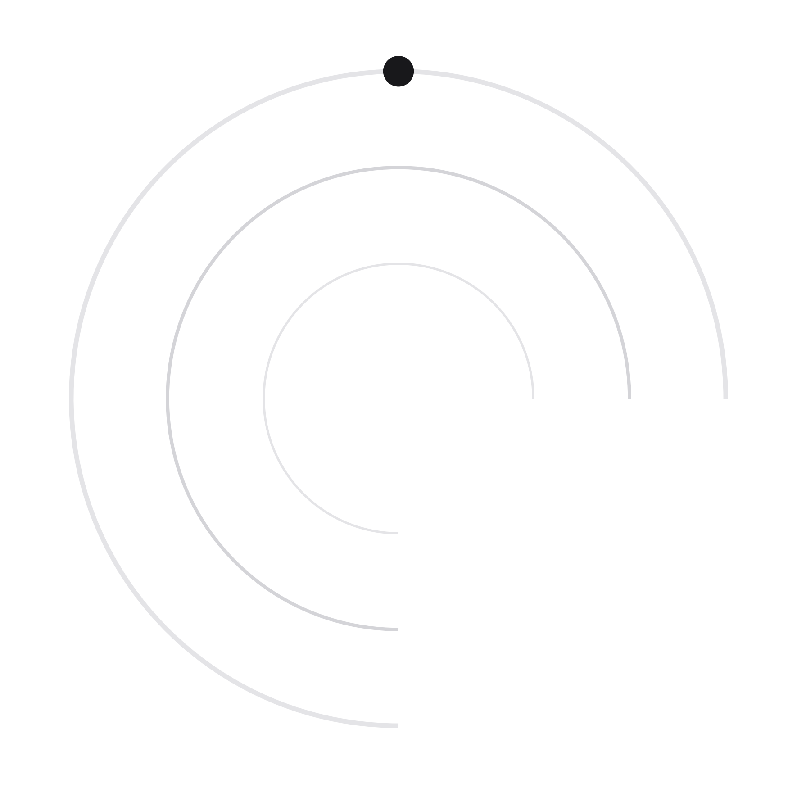
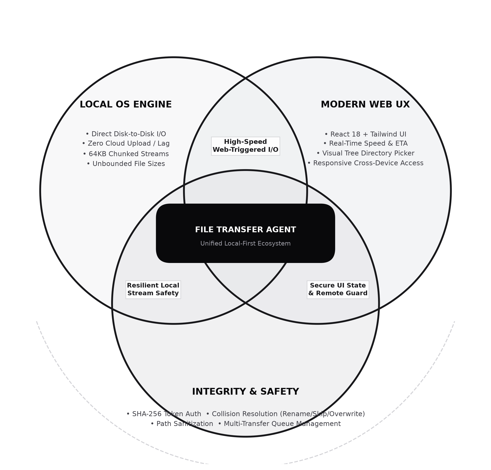

High-performance direct local file and folder transfers between folders on your machine via a modern web architecture. Zero cloud uploads, real-time streaming backpressure, and sandboxed security.
127.0.0.1; validated against ALLOWED_PATHS whitelist.
file (1).ext.rename on the same drive partition, with automatic recovery to a verified streaming-copy + unlink cycle when moving across separate disks (e.g. C: to D:).The Challenge: Reading multi-gigabyte files into memory faster than destination disks can write leads to memory exhaustion and Node.js process crashes.
The Implementation: Streams are created with custom highWaterMark chunking (64KB default). When writeStream.write(chunk) returns false, readStream.pause() triggers immediately.
The Drain Event: When the destination OS kernel flushes the buffer, the write stream emits drain, resuming reads. RAM usage remains flat (~30MB) even on 100GB files.
The Constraint: Standard OS fs.rename is an atomic filesystem inode pointer update. It only works within the exact same physical disk partition.
The EXDEV Bug: Moving files across partitions (e.g. from C:\ to D:\) throws EXDEV: cross-device link not permitted.
Our Solution: The engine catches EXDEV automatically, seamlessly spins up a chunked streaming copy, monitors progress, and unlinks the source only upon verified completion.
1. Complete Architectural Decoupling: The browser acts solely as an intuitive control plane while the local agent daemon carries out high-speed native I/O with zero cloud exposure.
2. Resilient Engineering: Production-hardened against stream backpressure memory spikes, EXDEV multi-drive partitions, and filesystem race conditions.
3. Open & Production Ready: Fully typed with TypeScript, tested, documented, and available on GitHub.